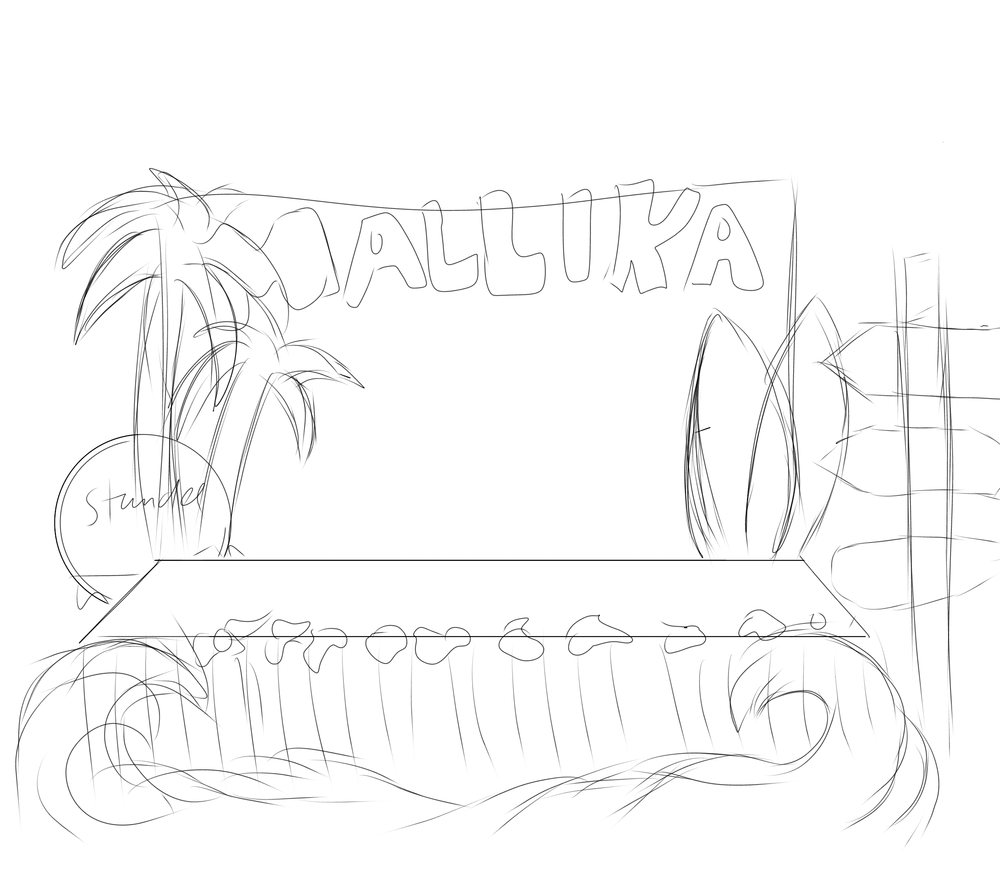

Saat
pertama diumumkan bahwa tema bazaar IL kali ini adalah Nusantara, tema yang pertama kali kami ajukan
merupakan pulau Bali. Dengan keindahan pantai yang identik dan atraksi terkenal bagi kalangan turis, pulau
Bali merupakan sebuah tema utama yang cocok untuk dikembangkan pada produk, tema booth, sampai dengan desain
awal. Kami pun membuat nama kelompok kami yang diambil dari bahasa sansekerta yaitu ‘Mallika’ yang memiliki
arti ‘bunga melati’. Pertama, sebelum kami merencanakan segala perencanaan booth, kami menetapkan skema
warna. Diambil dari tema pantai-pantai di Bali saat matahari terbenam, warna yang kami pilih adalah jingga,
kuning muda, dan biru seperti air laut. Selain itu, kami juga menghubungkan tema kami dengan musim panas
atau ‘summer colors’ yang identik dengan warna merah muda, biru tosca, dan kuning terang. Semua warna-warna
ini menjadi sebuah warna dasar untuk semua perencanaan desain kami. Selesai kami membuat skema warna, kami
juga membuat perencanaan booth. Kami memulai dengan membuat sketsa gambaran booth yang akan kami terapkan
saat hari bazaar nanti. Tetap pada tema kami, booth kami diambil inspirasi dari stand-stand booth di pinggir
pantai. Ada berbagai elemen pantai juga seperti pohon kelapa, bunga - bunga, kelapa, rumbai, dan papan
selancar. Pada perencanaan booth kami, kami memiliki rencana untuk membuat semacam bentuk huruf ‘L’ sebagai
posisi meja agar pekerjaan kami bisa lebih cepat dan efisien.

Kami berencana untuk membuat semua elemen-elemen dekorasi tema pantai tersebut dengan menggunakan kardus
dan cat. Dengan itu, kami dapat lebih mudah membuat dekorasi untuk stand booth kami. Selain membuat skema
warna dan gambaran booth, kami juga membuat logo dan akun instagram untuk mempromosikan produk-produk
kami. Dimulai dengan membuat logo, kami membuatnya di aplikasi yang mudah sebagai permulaan perencanaan.
Pertamanya, kami mempunyai ide untuk membuat bunga sebagai simbol logo kelompok kami. Logo versi pertama
ini sempat digambar tetapi diubah menjadi desain yang lebih menarik perhatian. Logo tersebut ada maskot
kami yaitu ‘Loco’ yang merupakan sebuah kelapa dengan karakteristik kartun. Di bagian belakang logo, kami
juga menambahkan pemandangan pantai lengkap dengan papan seluncur dan pasir. Logo versi kedua ini
merupakan versi terakhir dari logo kelompok kami. Sesudah kami menyelesaikan logo, kami membuat akun
sosial media (Instagram, TikTok) untuk mempromosikan produk-produk jualan kami. Untuk nama pengguna atau
username kami, kami memilih nama ‘mallika_id’. Untuk melengkapkan biodata kelompok kami, kami juga membuat
slogan dan poster untuk lebih terlihat unik. Slogan yang kami pilih merupakan ‘belanja di Mallika, temukan
cerita suka cita, keindahan Dewata.’ Semua ini juga dilengkapi dengan postingan kami akan produk-produk
yang kami jual dalam bentuk poster.
Hasil Dekorasi
H-3 Bulan sebelum hari-h bazaar kami sudah memiliki konsep keseluruhan terkait booth penjualan. Yakni
booth yang menarik perhatian. Dekorasi yang ramai serta warna - warna yang menyala. Sketsa konsep
dirakit di Ibispaint dan mengalami beberapa revisi. Revisi dikarenakan beberapa anggota kelompok tidak
setuju dengan konsep atau merasa masih kurang pas dengan kondisi dan suasana.

Hasil praktiknya kami taruh elemen - elemen tersebut di depan stand agar lebih terlihat dan mencolok.
Namun, juga memperluas ruang gerak anggota - anggota kelompok agar tidak begitu sempit. Selain itu
juga pada penempatan tulisan kami ubah dari menggunakan balon menjadi kardus. Agar lebih besar dan
sesuai dengan suasana stand.